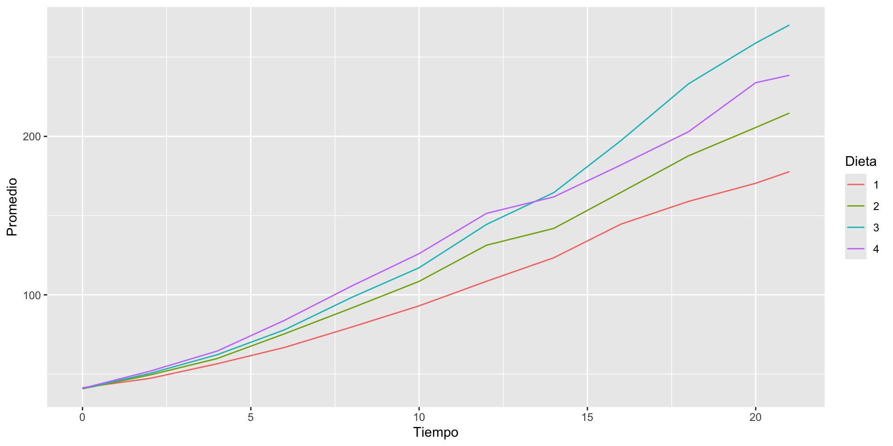

Lectura de datos desde archivos
Archivos de texto plano y Excel
![]()
Obteniendo datos
Introducción
Los datos para el análisis estadístico pueden provenir de muchas fuentes. R viene con muchos conjuntos de datos integrados y hay más datos en muchos de los paquetes complementarios. R también puede leer datos de una amplia variedad de fuentes y en una amplia variedad de formatos. Este capítulo cubre la importación de datos de archivos de texto (incluidos datos similares a hojas de cálculo en formato delimitado por comas o tabulaciones, XML y JSON), archivos binarios (hojas de cálculo de Excel y datos de otro software de análisis), sitios web y bases de datos.
Objetivos del capítulo
Después de estudiar este capítulo, el estudiante debería:
- Poder acceder a los conjuntos de datos proporcionados con los paquetes de R.
- Poder importar datos de archivos de texto.
- Poder descargar datos de sitios web.
- Poder importar datos de una base de datos.
Conjuntos de datos integrados
Uno de los paquetes de R se llama
datasets, y tiene exclusivamente conjuntos de datos de ejemplo.Estos datos son ideales para probar código y para explorar nuevas técnicas de análisis de datos.
Muchos otros paquetes también contienen conjuntos de datos.
Puede ver todos los conjuntos de datos que están disponibles en los paquetes que ha cargado usando la función
data:
Todos los datas disponibles
Para obtener una lista más completa, incluidos los datos de todos los paquetes que tenga instalados, utilice esta orden:
Cargar los datos
Otro ejemplo
Item Title
1 alpe_d_huez Alpe d'Huez
2 alpe_d_huez2 Alpe d'Huez
3 crab_tag Crab tag
4 deer_endocranial_volume Deer Endocranial Volume
5 english_monarchs English Monarchs
6 gonorrhoea Gonorrhoea
7 hafu Hafu
8 hafu2 Hafu
9 obama_vs_mccain Obama vs. McCainOtro ejemplo
- Qué tipo de objeto es
crab_tag?
- Qué hay por dentro de la lista
crab_tag?
Mission.Day Date Max.Temp Min.Temp Max.Depth Min.Depth Batt.Volts
1 0 2008-08-08 27.734 25.203 0.06 -0.07 3.06
2 1 2008-08-09 25.203 23.859 0.06 -0.07 3.09
3 2 2008-08-10 24.016 23.500 -0.07 -0.10 3.09
4 3 2008-08-11 26.453 23.281 -0.04 -0.10 3.09
5 4 2008-08-12 27.047 23.609 -0.10 -0.26 3.09
6 5 2008-08-13 24.625 23.438 -0.04 -0.13 3.09Hacer cuentas con datos leidos
weight Time Chick Diet
1 42 0 1 1
2 51 2 1 1
3 59 4 1 1
4 64 6 1 1
5 76 8 1 1
6 93 10 1 1- Cuántas dietas se ensayaron?
Calculo del peso promedio
- Cual es el promedio del peso dentro de cada dieta
datos$Diet: 1
[1] 102.6455
------------------------------------------------------------
datos$Diet: 2
[1] 122.6167
------------------------------------------------------------
datos$Diet: 3
[1] 142.95
------------------------------------------------------------
datos$Diet: 4
[1] 135.2627Evolución del peso en el tiempo, por dieta
Cálculos
Calculo del peso promedio para cadia dieta y día
Cambiamos nombres de columnas
Graficamos

Para acceder a los datos en cualquiera de estos conjuntos de datos, llame a la función data, pasando el nombre del conjunto de datos y el paquete donde se encuentran los datos (si el paquete se ha cargado previamente, puede omitir el nombre del paquete):
id time status age sex disease frail
1 1 8 1 28 1 Other 2.3
2 1 16 1 28 1 Other 2.3
3 2 23 1 48 2 GN 1.9
4 2 13 0 48 2 GN 1.9
5 3 22 1 32 1 Other 1.2
6 3 28 1 32 1 Other 1.2Ahora el marco de datos kidney está disponible y se puede usar para análisis
Datos desde archivos externos
Leer archivos de texto
Hay muchos formatos y estándares de documentos de texto para almacenar datos.
Dos formatos bastante extendidos para almacenar datos el
csv(valores separados por comas) y valores separados (o delimitados) por tabulaciones,XML(eXtensible Markup Language),JSON( JavaScript Object Notation)Otras fuentes de datos de texto están menos estructuradas: un libro, por ejemplo, contiene datos de texto sin ninguna estructura formal.
Ventaja de los archivos de texto
La principal ventaja de almacenar datos en archivos de texto es que pueden ser leídos por practicamente cualquier otro software de análisis de datos y por humanos. Esto hace que los datos sean reutilizables por otras personas.
Archivos CSV y delimitados por tabuladores
Los datos rectangulares (como una hoja de cálculo) se almacenan comúnmente en archivos de valores delimitados, particularmente archivos de valores separados por comas (CSV) y valores delimitados por tabulaciones.
La función
read.tablelee estos archivos delimitados y almacena los resultados en un marco de datos (data frame). En su forma más simple,read.tabletoma la ruta a un archivo de texto e importa el contenido.
Hay muchos argumentos para especificar cómo se leerá el archivo; quizás el más importante sea
sep, que determina el caractér a utilizar como separador entre campos (columnas).También puede especificar cuántas líneas de datos leer usando el argumento
nrowy cuántas líneas al principio del archivo omitir.Las opciones más avanzadas incluyen la capacidad de anular los nombres de fila, los nombres de columna y las clases predeterminadas, especificar la codificación de caracteres del archivo de entrada y cómo deben declararse las columnas de caracteres.
Las funciones
read.csv,read.csv2,read.delimyread.delim2corresponden a la misma funciónread.tablesolo que tienen los argumentos predeteminados de forma distintaSon wrapper functions.
read.csvestablece el separador predeterminado en una coma y asume que los datos tienen una fila de encabezado.read.csv2es su primo europeo, que utiliza una coma para los lugares decimales y un punto y coma como separador.Asimismo,
read.delimyread.delim2importan archivos delimitados por tabulaciones con puntos o comas para los lugares decimales, respectivamente.
Directorio de trabajo
Cambiar el directorio de trabajo
Verificar
Para verificar si el archivo a leer está en el directorio actual
- Pedimos un listado de los archivos en la carpeta de trabajo
- Verificar si mi nombre de archivo está en la salida anterior
Leer los datos
- Leer el archivo de datos
survival.txt
Inspeccionar
V1 V2 V3 V4 V5 V6 V7
1 1 6.7 62 81 2.59 200 2.3010
2 2 5.1 59 66 1.70 101 2.0043
3 3 7.4 57 83 2.16 204 2.3096
4 4 6.5 73 41 2.01 101 2.0043
5 5 7.8 65 115 4.30 509 2.7067
6 6 5.8 38 72 1.42 80 1.9031- Estructura del data frame
'data.frame': 54 obs. of 7 variables:
$ V1: int 1 2 3 4 5 6 7 8 9 10 ...
$ V2: num 6.7 5.1 7.4 6.5 7.8 5.8 5.7 3.7 6 3.7 ...
$ V3: int 62 59 57 73 65 38 46 68 67 76 ...
$ V4: int 81 66 83 41 115 72 63 81 93 94 ...
$ V5: num 2.59 1.7 2.16 2.01 4.3 1.42 1.91 2.57 2.5 2.4 ...
$ V6: int 200 101 204 101 509 80 80 127 202 203 ...
$ V7: num 2.3 2 2.31 2 2.71 ...Inspeccionar
- Resumen de las columnas
V1 V2 V3 V4
Min. : 1.00 Min. : 2.600 Min. : 8.00 Min. : 23.00
1st Qu.:14.25 1st Qu.: 5.025 1st Qu.:52.50 1st Qu.: 67.25
Median :27.50 Median : 5.800 Median :63.00 Median : 79.00
Mean :27.50 Mean : 5.783 Mean :63.24 Mean : 77.11
3rd Qu.:40.75 3rd Qu.: 6.500 3rd Qu.:76.00 3rd Qu.: 89.50
Max. :54.00 Max. :11.200 Max. :96.00 Max. :119.00
V5 V6 V7
Min. :0.740 Min. : 34.0 Min. :1.532
1st Qu.:2.020 1st Qu.:110.5 1st Qu.:2.043
Median :2.595 Median :155.5 Median :2.192
Mean :2.744 Mean :197.2 Mean :2.206
3rd Qu.:3.275 3rd Qu.:216.5 3rd Qu.:2.335
Max. :6.400 Max. :830.0 Max. :2.919 Ponerle nombres a las columnas
Código
case clot prog enz liv time ltime
1 1 6.7 62 81 2.59 200 2.3010
2 2 5.1 59 66 1.70 101 2.0043
3 3 7.4 57 83 2.16 204 2.3096
4 4 6.5 73 41 2.01 101 2.0043
5 5 7.8 65 115 4.30 509 2.7067
6 6 5.8 38 72 1.42 80 1.9031Nombres de columna al leer
Colocar los nombres de columna al momento de la lectura
Nombres de fila
Se indica que los nombres de filas están en la columna 1
Nombres de fila
Colocar nombre de fila al momento de la lectura
Código
case clot prog enz liv time ltime
Fila 1 1 6.7 62 81 2.59 200 2.3010
Fila 2 2 5.1 59 66 1.70 101 2.0043
Fila 3 3 7.4 57 83 2.16 204 2.3096
Fila 4 4 6.5 73 41 2.01 101 2.0043
Fila 5 5 7.8 65 115 4.30 509 2.7067
Fila 6 6 5.8 38 72 1.42 80 1.9031Borrado de columna
Lectura, otro ejemplo
Cambiemos de archivo. El archivo EX7-4.txt a diferencia del anterior tiene los nombres de columna en la primera fila.
Cuidado !!!
Calcular la media de MATH por cada nivel de SEX
No se esta leyendo bien porque hay que indicarle que la primera fila contiene los nombres de columna.
Warning message in mean.default(eje74$MATH):
“argument is not numeric or logical: returning NA”Lectura de un archivo csv
X.tiempo.momento.resp
1 1;1;0;95
2 2;2;0;93
3 3;3;0;93
4 4;4;0;91
5 5;5;0;90
6 6;6;0;88Lectura de un archivo csv opcion sep
Lectura de un archivo csv read.csv2
Ejercicio
Calcular el promedio de la columna resp para cada nivel de momento
Leer el archivo survival2.csv
X case clot prog enz liv time ltime
1 Fila 1 1 6.7 62 81 2.59 200 2.301030
2 Fila 2 2 5.1 59 66 1.70 101 2.004321
3 Fila 3 3 7.4 57 83 2.16 204 2.309630
4 Fila 4 4 6.5 73 41 2.01 101 2.004321
5 Fila 5 5 7.8 65 115 4.30 509 2.706718
6 Fila 6 6 5.8 38 72 1.42 80 1.903090Leer SustanciaDensidad.csv
Leer SustanciaDensidad.csv
Sustancia Densidad
1 air 0,0012
2 gasoline 0,67
3 ice 0,9
4 pure water 1
5 seawater 10,25
6 human body 1,03Leer SustanciaDensidad.csv
Sustancia Densidad
1 air 0.0012
2 gasoline 0.6700
3 ice 0.9000
4 pure water 1.0000
5 seawater 10.2500
6 human body 1.0300Leer SustanciaDensidad.csv con read.csv2
Lectura de datos que estan en una carpeta en la web.
Leer archivo de excel
Microsoft Excel es el paquete de hojas de cálculo más popular del mundo y, muy posiblemente, la herramienta de análisis de datos más popular del mundo. Desafortunadamente, sus formatos de documento, XLS y XLSX, no son muy compatibles (no trabajan bien) en otros programas, especialmente fuera del entorno Windows. Esto significa que puede ser necesario experimentar un poco para encontrar una configuración que funcione para su sistema operativo y el tipo particular de archivo de Excel.
Leer archivo de excel
En R contamos con el paquete xlsx que está basado en Java y es multiplataforma; por lo que, al menos en teoría, puede leer cualquier archivo de Excel en cualquier sistema. La librería xlsx proporciona una variedad de funciones para leer archivos Excel: las hojas de cálculo se pueden importar con read.xlsx y read.xlsx2
Leer archivo de excel
Código
TRATA REPLICA. MUESTRA LONGITUD PESO ABm
1 1 1 1 9.84 7.4 1018
2 1 1 2 9.07 7.2 947
3 1 1 3 9.61 8.5 975
4 1 1 4 8.92 6.4 862
5 1 1 5 9.33 7.4 890
6 1 1 6 9.15 6.4 791data <- read.xlsx2("datos.xls",sheetIndex = 1,colClasses = c(
"character", "integer", "integer", "numeric",
"numeric", "numeric", "numeric") )
head(data)| TRATA | REPLICA. | MUESTRA | LONGITUD | PESO | ABm | |
|---|---|---|---|---|---|---|
| <chr> | <int> | <int> | <dbl> | <dbl> | <dbl> | |
| 1 | 1 | 1 | 1 | 9.84 | 7.4 | 1018 |
| 2 | 1 | 1 | 2 | 9.07 | 7.2 | 947 |
| 3 | 1 | 1 | 3 | 9.61 | 8.5 | 975 |
| 4 | 1 | 1 | 4 | 8.92 | 6.4 | 862 |
| 5 | 1 | 1 | 5 | 9.33 | 7.4 | 890 |
| 6 | 1 | 1 | 6 | 9.15 | 6.4 | 791 |
data2<-read.xlsx2("datos.xls",sheetIndex = 2)
#head(data2)
#
data2 <- read.xlsx2("datos.xls",sheetIndex = 2,colClasses = c(
"integer","numeric"))
#head(data2)